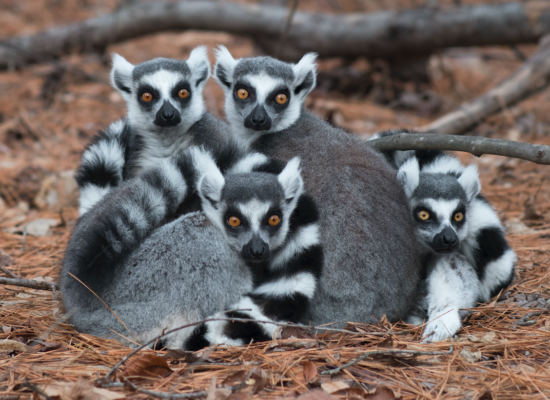

Ring-Tailed Lemurs
Everyone is known to enjoy monkey-business every once in a while, and what better animal to get that from than the ring-tailed lemur? Better known to you as King Julian from the Dreamworks movie Madagascar, these stylish primates are very fun to watch. As some swing or climb onto trees or other structures in their habitat, others are socializing and interacting with one another. Such energy and activity isn't always a guaruntee, (though at least one other animal is usually fairly active), and it's a nice change of pace. Their easy to identify ring-tail gives this lemur a personality that really sticks out and makes you want to seek out a similarly fashionable animal.
As you once again reminisce about this lemur's animated counterpart, you learn more information on how the real life animal lives:
Life on the Ground
Lemurs use their hands and feet to move nimbly through the trees, but cannot grip with their tails as some of their primate cousins do. Ring-tailed lemurs also spend a lot of time on the ground, which is unusual among lemur species. They forage for fruit, which makes up the greater part of their diet, but also eat leaves, flowers, tree bark, and sap.
Scent Marking
Ring-tailed lemurs have powerful scent glands and use their unique odor as a communication tool and even as a kind of weapon. Lemurs mark their territory by scent, serving notice of their presence to all who can smell. During mating season, male lemurs battle for dominance by trying to outstink each other. They cover their long tails with smelly secretions and wave them in the air to determine which animal is more powerful.
Behavior
Ring-tailed lemurs live in groups known as troops. These groups may include 6 to 30 animals, but average about 17. Both sexes live in troops, but a dominant female presides over all.
Ring-tailed lemurs are threatened, largely because the sparse, dry forests they love are quickly vanishing.
Click here to learn more about ring-tailed lemurs.